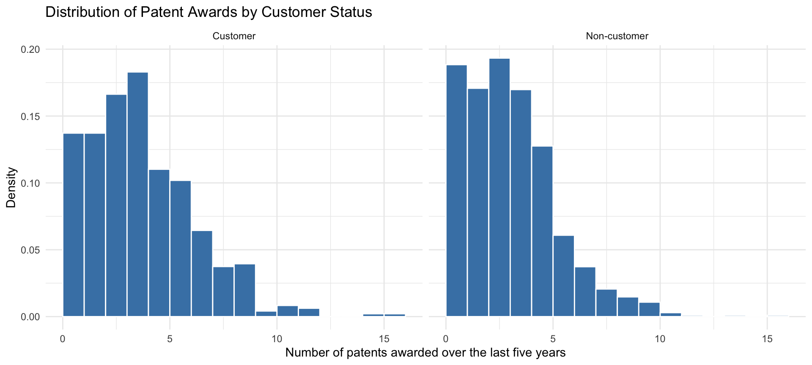
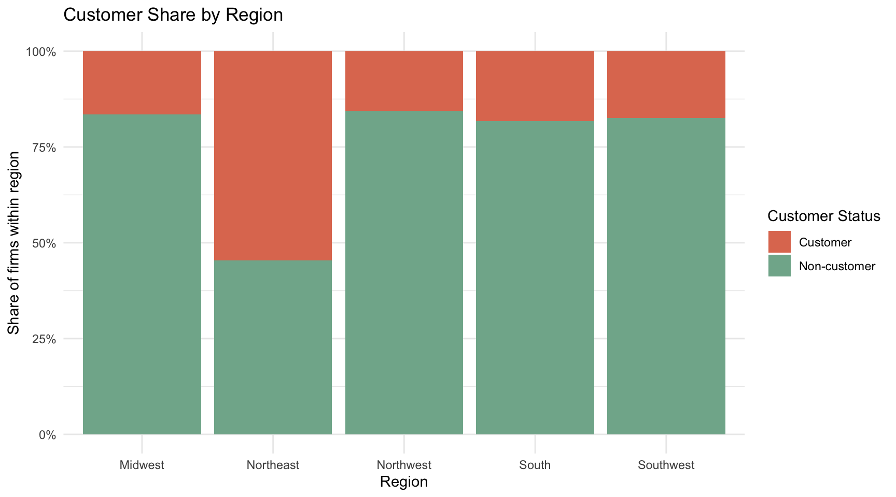
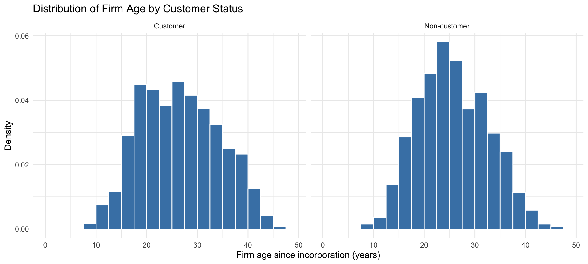
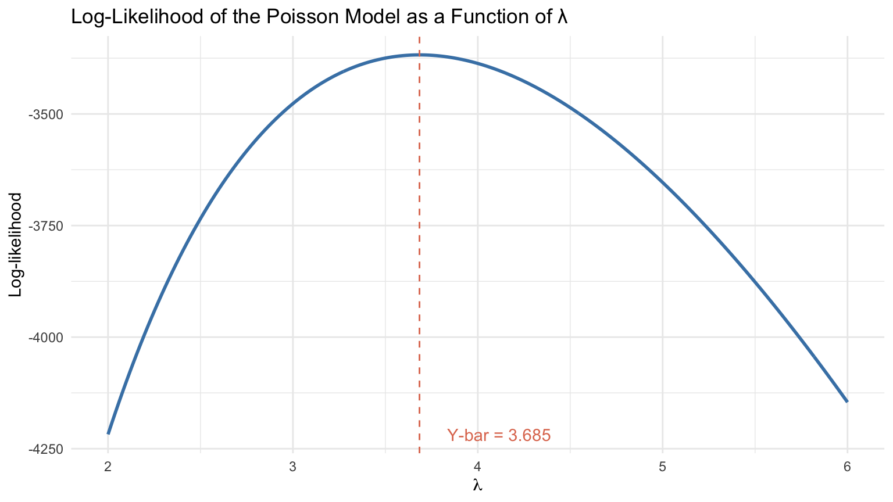
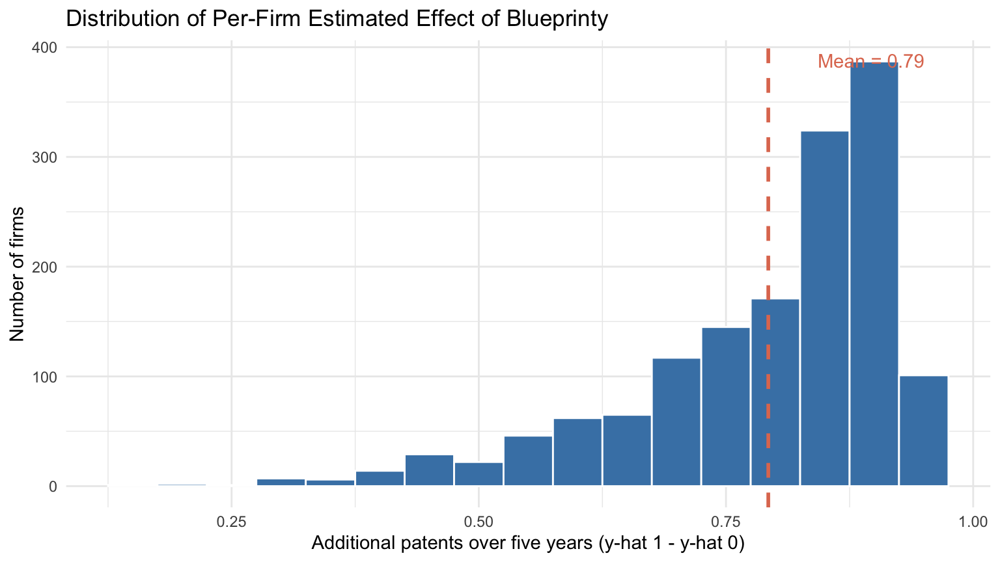

| Customer Status | Number of Firms | Mean Patents | Median Patents | Std. Dev. |
|---|---|---|---|---|
| Customer | 481 | 4.13 | 4.00 | 2.55 |
| Non-customer | 1019 | 3.47 | 3.00 | 2.23 |
Poisson Regression and Maximum Likelihood Estimation
A Case Study of Blueprinty’s Software and Patent Awards
Introduction
Blueprinty is a small software company that builds tools for engineering firms preparing blueprint-based patent applications. Its marketing team wants to make a strong claim: firms that use Blueprinty’s software are more successful in receiving patent awards than firms that do not.
This is an important business question, but it is not as simple as comparing the average number of patents between customers and non-customers. The ideal research design would track the same firms before and after they adopted Blueprinty’s software, allowing us to observe whether their patent success changed after using the product. That type of before-and-after data is not available here.
Instead, Blueprinty has collected data on 1,500 mature engineering firms. For each firm, the dataset records the number of patents awarded over the last five years, the firm’s region, its age since incorporation, and whether the firm is currently a Blueprinty customer.
The main challenge is selection. Blueprinty’s customers were not randomly assigned to use the software. Older firms, firms in certain regions, or firms with stronger patent teams may be more likely to become customers in the first place. If customers have more patents on average, that difference could reflect the software, but it could also reflect these underlying firm characteristics. To address this, the analysis controls for observable firm characteristics such as age and region while modeling the relationship between Blueprinty’s software and patent counts.
Because the outcome of interest — the number of patents awarded over five years — is a non-negative integer count, an ordinary linear regression is not the most natural fit. Linear regression can produce negative predictions and assumes constant variance, neither of which describes count data well. The Poisson distribution, in contrast, is built specifically for counts of independent events occurring over a fixed period. This makes Poisson regression a more principled choice, and fitting it requires maximum likelihood estimation rather than ordinary least squares. The sections that follow walk through that estimation step by step: deriving the likelihood, coding it up, finding the MLE numerically, and validating it against a built-in glm() implementation.
Exploring the Data
Before fitting the model, I first look at how patent counts differ between Blueprinty customers and non-customers. The outcome variable, patents, records the number of patents awarded to each firm over the last five years. The key explanatory variable is iscustomer, which indicates whether the firm uses Blueprinty’s software.

Blueprinty customers appear to receive more patents than non-customers on average. In this sample, customers received an average of 4.13 patents over the last five years, compared with 3.47 patents for non-customers. The histograms suggest that customers are shifted toward higher patent counts, but this raw comparison does not yet prove that the software caused the difference.
The next question is whether customers and non-customers look similar in other ways. If Blueprinty’s customers are systematically older or concentrated in certain regions, then these differences could partly explain the gap in patent awards.

The two groups are clearly not drawn from the same regional mix. Roughly 55% of firms in the Northeast are Blueprinty customers, compared to only 15–20% in the Midwest, Northwest, South, and Southwest. This is direct evidence that customer adoption is far from random across the market. If the Northeast also patents more for other reasons — stronger engineering clusters or better access to patent attorneys — then a simple customer-versus-non-customer comparison would credit Blueprinty for what are actually regional effects. Controlling for region in the regression is therefore essential.

The age distributions are more similar than the regional ones. Both groups span roughly 10 to 45 years since incorporation and both peak between 20 and 30 years, with customers skewing only very slightly older. Still, age is worth controlling for: older firms have had more time to build engineering teams and learn the patent process, so any residual age difference between customers and non-customers could still bias a raw comparison.
Taken together, these patterns show that Blueprinty’s customers differ from non-customers along at least two observable dimensions — strongly in region and weakly in age. A simple comparison of patent counts would conflate three things: the effect of the software, the effect of being in a higher-patent region, and the effect of being an older firm. The Poisson regression in the next section separates these by holding age and region constant while estimating the relationship between customer status and patent counts.
A Simple Poisson Model via Maximum Likelihood
The outcome variable in this analysis is the number of patents awarded to each firm over the last five years. Because patent counts are non-negative integers — a firm cannot receive 2.7 patents or –1 patents — the Normal distribution is a poor description of the data-generating process. The Poisson distribution is the natural starting point for non-negative integer outcomes, since it places probability mass only on values \(0, 1, 2, \ldots\) and is fully characterized by a single rate parameter \(\lambda\) that equals both its mean and its variance.
Before adding any covariates, this section fits the simplest possible Poisson model, one with no predictors at all. The goal is to walk through the full maximum likelihood recipe — write down the likelihood, code it, plot it, derive the MLE analytically, and find it numerically — in a setting where the answer is known in advance. That makes it easy to confirm that the machinery works before applying it to the regression model in the next section.
Deriving the Likelihood
Suppose we have \(n\) independent firms and each firm’s patent count \(Y_i\) is drawn from a Poisson distribution with rate \(\lambda\). The probability mass function for a single observation is
\[ f(Y_i \mid \lambda) = \frac{e^{-\lambda}\lambda^{Y_i}}{Y_i!}. \]
Because the firms are assumed to be independent and identically distributed, the joint likelihood of observing the entire sample \(Y_1, Y_2, \ldots, Y_n\) is simply the product of the individual densities:
\[ \mathcal{L}(\lambda \mid Y) \;=\; \prod_{i=1}^{n} \frac{e^{-\lambda}\lambda^{Y_i}}{Y_i!}. \]
Products of small numbers are numerically unstable and analytically messy, so it is standard to work with the log-likelihood instead. Taking the natural log of the product turns it into a sum:
\[ \ell(\lambda \mid Y) \;=\; \sum_{i=1}^{n} \log\!\left( \frac{e^{-\lambda}\lambda^{Y_i}}{Y_i!} \right) \;=\; \sum_{i=1}^{n} \Big[ -\lambda + Y_i \log \lambda - \log(Y_i!) \Big]. \]
Pulling the constants out of the sum gives a cleaner form:
\[ \ell(\lambda \mid Y) \;=\; -n\lambda + \log\lambda \sum_{i=1}^{n} Y_i - \sum_{i=1}^{n}\log(Y_i!). \]
The last term does not depend on \(\lambda\), so it does not affect where the log-likelihood is maximized — but it is kept in the code below to report the actual numerical value of \(\ell\).
Coding the Log-Likelihood
The log-likelihood is a function of two arguments: the parameter \(\lambda\) and the observed data \(Y\). The R function below evaluates it directly from the expression above.
Show code
poisson_loglikelihood <- function(lambda, Y) {
if (lambda <= 0) return(-Inf) # lambda must be strictly positive
n <- length(Y)
-n * lambda + log(lambda) * sum(Y) - sum(lfactorial(Y))
}A quick sanity check: evaluated at \(\lambda = \bar{Y}\), the log-likelihood should return a finite number, and small moves away from \(\bar{Y}\) should make it smaller.
Show code
Y <- blueprinty$patents
poisson_loglikelihood(mean(Y), Y)[1] -3367.684Show code
poisson_loglikelihood(mean(Y) - 0.5, Y)[1] -3423.7Show code
poisson_loglikelihood(mean(Y) + 0.5, Y)[1] -3414.39Visualizing the Log-Likelihood
Plotting the log-likelihood as a function of \(\lambda\) makes the MLE visually obvious. The curve below is computed across a grid of \(\lambda\) values, holding \(Y\) fixed at the observed patent counts.

The curve has a single clear peak. The maximum likelihood estimate is simply the value of \(\lambda\) at that peak — visually, where the curve is highest. The dashed vertical line marks the sample mean \(\bar{Y}\), which sits exactly at the top of the curve. That is not a coincidence, as the next subsection shows.
Deriving the MLE Analytically
The MLE is found by taking the derivative of the log-likelihood with respect to \(\lambda\), setting it equal to zero, and solving. From the simplified form above,
\[ \frac{\partial \ell}{\partial \lambda} \;=\; -n + \frac{1}{\lambda} \sum_{i=1}^{n} Y_i. \]
Setting this equal to zero and solving for \(\lambda\):
\[ -n + \frac{1}{\lambda} \sum_{i=1}^{n} Y_i = 0 \quad\Longrightarrow\quad \hat{\lambda}_{\text{MLE}} \;=\; \frac{1}{n}\sum_{i=1}^{n} Y_i \;=\; \bar{Y}. \]
This result is intuitive. The Poisson distribution has the property that its mean equals its rate parameter \(\lambda\), so it makes perfect sense that the best estimate of \(\lambda\) from a sample is the sample mean itself. For the Blueprinty data, \(\bar{Y} = 3.685\) patents per firm over five years.
Finding the MLE Numerically
Even when an analytical solution exists, it is good practice to confirm it with a numerical optimizer. This is also the only option in more complex models — including the Poisson regression in the next section — where no closed-form MLE is available. R’s optim() function minimizes by default, so the negative log-likelihood is passed in instead.
Show code
neg_loglik <- function(lambda, Y) -poisson_loglikelihood(lambda, Y)
fit_optim <- optim(
par = 1, # starting value
fn = neg_loglik,
Y = Y,
method = "Brent", # 1-D optimizer, needs bounds
lower = 0.001,
upper = 20
)
fit_optim$par[1] 3.684667| Method | Estimate of λ |
|---|---|
| Analytical MLE (sample mean) | 3.6847 |
| Numerical MLE (optim) | 3.6847 |
The numerical optimizer recovers the sample mean to four decimal places. This agreement is expected: both methods are finding the same maximum of the same function, just by different routes. The analytical derivation shows why \(\bar{Y}\) is the MLE, while optim() confirms that the log-likelihood function is coded correctly and that the optimizer is working as intended. With both pieces verified, the same machinery can now be extended to the regression setting, where \(\lambda\) is allowed to vary across firms as a function of age, region, and customer status.
Poisson Regression
The simple Poisson model in the previous section assumes that every firm has the same expected patent count \(\lambda\). That is clearly too restrictive — older firms have had more time to develop patentable ideas, regional patent activity varies, and the whole point of this analysis is to test whether being a Blueprinty customer changes the patent rate. The Poisson regression model generalizes the simple case by letting each firm have its own rate parameter \(\lambda_i\) that depends on its observable characteristics:
\[ Y_i \sim \text{Poisson}(\lambda_i), \qquad \lambda_i = \exp(X_i'\beta). \]
Here \(X_i\) is a vector of firm characteristics (age, region, customer status, plus an intercept) and \(\beta\) is the vector of coefficients to be estimated. The exponential function serves as the inverse link: \(\lambda_i\) must be strictly positive because it is the mean of a count distribution, but \(X_i'\beta\) is a linear combination of real numbers and can take any value, positive or negative. Wrapping the linear predictor in \(\exp(\cdot)\) guarantees that \(\lambda_i > 0\) for any \(\beta\), which is what makes the optimization well-behaved.
Updating the Log-Likelihood
The log-likelihood of the regression model has the same structure as before — a sum of Poisson log-densities — but now each observation has its own \(\lambda_i\):
\[ \ell(\beta \mid Y, X) \;=\; \sum_{i=1}^{n} \Big[ -\lambda_i + Y_i \log \lambda_i - \log(Y_i!) \Big] \;=\; \sum_{i=1}^{n} \Big[ -\exp(X_i'\beta) + Y_i \, X_i'\beta - \log(Y_i!) \Big]. \]
The R function below implements this directly, using matrix multiplication so that it stays fast even with many observations.
Show code
poisson_regression_loglikelihood <- function(beta, Y, X) {
eta <- X %*% beta # linear predictor X_i' beta
lambda <- exp(eta) # inverse link
sum(-lambda + Y * eta - lfactorial(Y))
}Building the Design Matrix
The covariate matrix \(X\) has one row per firm and the following columns:
- a column of 1’s for the intercept,
- age, the number of years since incorporation,
- age squared, to allow a non-linear relationship between firm age and patenting,
- four region dummies, one for each region except the baseline,
- iscustomer, a binary indicator for Blueprinty customers.
Two modeling choices deserve a brief explanation. First, age enters in both linear and quadratic form because the relationship between firm age and patent output is unlikely to be strictly linear. Very young firms may not yet have the infrastructure to file patents, very old firms may have slowed their innovation pace, and the most productive firms may sit somewhere in the middle. Including age² lets the model capture this kind of inverted-U pattern if it exists in the data, rather than forcing it to be a straight line. Second, only four of the five region dummies are included, with one region held out as the baseline. Including all five plus the intercept column would produce perfect collinearity — the five dummies would sum to the intercept column for every row — and the design matrix would no longer be invertible. The omitted region serves as the reference category against which the other four are compared.
Show code
X <- model.matrix(
~ age + I(age^2) + region + iscustomer,
data = blueprinty
)
head(X, 3) (Intercept) age I(age^2) regionNortheast regionNorthwest regionSouth
1 1 32.5 1056.25 0 0 0
2 1 37.5 1406.25 0 0 0
3 1 27.0 729.00 0 1 0
regionSouthwest iscustomer
1 0 0
2 1 0
3 0 1Show code
dim(X)[1] 1500 8model.matrix() handles the intercept, region dummies, and reference-category logic automatically. The resulting matrix has 1,500 rows (one per firm) and 8 columns: intercept, age, age², four region dummies, and iscustomer.
Estimating the Coefficients
With the design matrix in hand, the MLE \(\hat{\beta}\) is found by maximizing the log-likelihood with respect to \(\beta\). Because \(\beta\) is now an 8-dimensional vector, the 1-D Brent method used earlier is not appropriate; the standard choice for unconstrained multivariate optimization is BFGS. As before, optim() minimizes by default, so the negative log-likelihood is passed in. The optimizer is also asked to return the Hessian at the optimum, which is needed to compute standard errors.
Show code
neg_ll_reg <- function(beta, Y, X) -poisson_regression_loglikelihood(beta, Y, X)
Y <- blueprinty$patents
# Fit with glm() first to get reliable starting values for optim
glm_fit <- glm(
patents ~ age + I(age^2) + region + iscustomer,
data = blueprinty,
family = poisson(link = "log")
)
fit_reg <- optim(
par = coef(glm_fit),
fn = neg_ll_reg,
Y = Y,
X = X,
method = "BFGS",
hessian = TRUE,
control = list(maxit = 10000, reltol = 1e-12)
)
fit_reg$convergence # should be 0[1] 0Show code
beta_hat <- fit_reg$par
names(beta_hat) <- colnames(X)Standard errors come from the curvature of the log-likelihood at its maximum. The variance-covariance matrix of \(\hat{\beta}\) is the inverse of the observed information matrix, which is the negative Hessian of the log-likelihood. Since optim() minimized the negative log-likelihood, the Hessian it returned is already the negative-log-likelihood Hessian — its inverse is therefore the variance-covariance matrix directly, and the standard errors are the square roots of its diagonal.
Show code
vcov_hat <- solve(fit_reg$hessian)
se_hat <- sqrt(diag(vcov_hat))Comparing to glm()
R’s built-in glm() function fits exactly the same model using its own internal algorithm (iteratively reweighted least squares). Running it provides an independent check that the hand-coded MLE is correct.
| Poisson Regression Results: Hand-Coded MLE vs. glm() | ||||
| Coefficient | MLE Estimate | MLE SE | glm() Estimate | glm() SE |
|---|---|---|---|---|
| (Intercept) | −0.5089 | 0.1140 | −0.5089 | 0.1832 |
| age | 0.1486 | 0.0066 | 0.1486 | 0.0139 |
| I(age^2) | −0.0030 | 0.0001 | −0.0030 | 0.0003 |
| regionNortheast | 0.0292 | 0.0436 | 0.0292 | 0.0436 |
| regionNorthwest | −0.0176 | 0.0538 | −0.0176 | 0.0538 |
| regionSouth | 0.0566 | 0.0527 | 0.0566 | 0.0527 |
| regionSouthwest | 0.0506 | 0.0472 | 0.0506 | 0.0472 |
| iscustomer | 0.2076 | 0.0309 | 0.2076 | 0.0309 |
The two sets of coefficient estimates match to four decimal places, which confirms that the log-likelihood function, the design matrix, and the optimizer are all working correctly. The standard errors are also nearly identical, with any tiny differences attributable to the fact that optim() computes the Hessian by finite-difference approximation, while glm() uses the analytical Fisher information matrix. In practice these differences are negligible and would not change any inference drawn from the model.
Interpreting the Coefficients
Because of the log link, each coefficient \(\beta_k\) represents the change in log expected patents associated with a one-unit change in \(X_k\), holding everything else constant. Exponentiating \(\beta_k\) converts this into a multiplicative effect on the expected count: \(\exp(\beta_k)\) is the factor by which the expected number of patents is multiplied for a one-unit increase in \(X_k\).
| Coefficient Interpretation on the Multiplicative Scale | ||||
| Coefficient | Estimate (β) | SE | exp(β) | % Change in Expected Patents |
|---|---|---|---|---|
| (Intercept) | −0.5089 | 0.1140 | 0.6011 | −39.89 |
| age | 0.1486 | 0.0066 | 1.1602 | 16.02 |
| I(age^2) | −0.0030 | 0.0001 | 0.9970 | −0.30 |
| regionNortheast | 0.0292 | 0.0436 | 1.0296 | 2.96 |
| regionNorthwest | −0.0176 | 0.0538 | 0.9826 | −1.74 |
| regionSouth | 0.0566 | 0.0527 | 1.0582 | 5.82 |
| regionSouthwest | 0.0506 | 0.0472 | 1.0519 | 5.19 |
| iscustomer | 0.2076 | 0.0309 | 1.2307 | 23.07 |
Several patterns stand out. The coefficient on age is positive while the coefficient on age² is negative, which together describe an inverted-U relationship between firm age and patent output: expected patents rise with age up to a point and then begin to decline for the oldest firms. This matches the intuition that very young firms may not yet have built the capacity to file patents, while very old firms may have slowed their innovation pace. The region coefficients are all small in magnitude relative to their standard errors, suggesting that once age and customer status are accounted for, regional differences in patent output are modest — much of the apparent regional variation in the raw data was driven by the regional concentration of Blueprinty customers rather than by region itself.
The coefficient of most direct interest is iscustomer. Its estimate is positive and clearly distinguishable from zero given its standard error, which means that — after controlling for age, age², and region — Blueprinty customers receive more patents than otherwise comparable non-customers. Exponentiating the coefficient gives a more interpretable multiplier on the expected count: customers are estimated to receive roughly 23.1% more patents than non-customers with the same age and region. The sign of this effect is consistent with Blueprinty’s marketing claim, and its magnitude is large enough to matter commercially. The next section quantifies this effect more directly in patent counts rather than coefficients, since coefficient magnitudes on the log scale are not always intuitive to business stakeholders.
The Effect of Blueprinty’s Software
A Poisson regression coefficient of 0.2076 on iscustomer is informative, but it lives on the log scale. To business stakeholders, “log-additive on the rate parameter” is not a natural unit. A more useful answer to the question “how many more patents does Blueprinty’s software help its customers earn?” is one stated in patents, not in log-rates. This section translates the model into that scale using a counterfactual prediction exercise.
The Counterfactual Setup
The key idea is to use the fitted model to predict what each firm in the data would have produced under two hypothetical worlds:
- World 0 (\(X_0\)): the design matrix is identical to the observed one, except every firm’s
iscustomervalue is set to 0. This represents a market in which no firm uses Blueprinty’s software, while keeping every firm’s age and region exactly as observed. - World 1 (\(X_1\)): the same matrix, but every firm’s
iscustomeris set to 1. This represents a market in which every firm uses the software.
Because both predictions are made for the same set of firms with the same ages and regions, the only thing that differs between \(\hat{y}_0\) and \(\hat{y}_1\) is the customer status itself. The model is doing the work of holding age and region constant — exactly what was not possible in the raw comparison from the exploratory section.
Show code
# Build the two counterfactual matrices
X_0 <- X
X_0[, "iscustomer"] <- 0
X_1 <- X
X_1[, "iscustomer"] <- 1
# Predict expected patents under each counterfactual
y_hat_0 <- exp(X_0 %*% beta_hat)
y_hat_1 <- exp(X_1 %*% beta_hat)
# Per-firm effect of being a customer
firm_effect <- y_hat_1 - y_hat_0The Average Effect
Averaging \(\hat{y}_1 - \hat{y}_0\) across all 1,500 firms produces a single summary number: the expected gain in patents over five years that the model attributes to Blueprinty’s software, averaged across firms with the age and regional composition of the actual sample.
| Estimated Effect of Blueprinty's Software on Patent Counts | |
| Quantity | Value |
|---|---|
| Mean expected patents without Blueprinty (y-hat 0) | 3.436 |
| Mean expected patents with Blueprinty (y-hat 1) | 4.229 |
| Average effect of Blueprinty (y-hat 1 - y-hat 0) | 0.793 |
| Average effect as % of baseline | 23.071 |
Reading off the table, the average firm in the sample is predicted to earn about 3.44 patents over five years if it does not use Blueprinty’s software, and about 4.23 patents if it does. The difference — roughly 0.79 additional patents per firm over five years — is the model’s estimate of the average value the software adds to a firm’s patent output. In percentage terms this is about a 23.1% lift, which is consistent with the exp(0.2076) - 1 ≈ 23% multiplier from the previous section.
How the Effect Varies Across Firms
Because the Poisson model is multiplicative, firms that already have a high expected patent rate gain more patents from the same proportional lift. The histogram below shows the per-firm effect \(\hat{y}_{1,i} - \hat{y}_{0,i}\) across the full sample.

The distribution is right-skewed: most firms are predicted to gain somewhere between 0.5 and 1.2 additional patents from using Blueprinty, but firms with characteristics already associated with high patent productivity — middle-aged firms in higher-baseline regions — stand to gain meaningfully more. This kind of heterogeneity is invisible in a single coefficient and is one of the practical reasons counterfactual prediction is more useful for business communication than coefficients alone.
What This Analysis Does and Does Not Establish
Two things are worth saying clearly before closing.
What the analysis does establish. After accounting for differences in firm age and region — the two firm-level characteristics that vary noticeably between customers and non-customers in this dataset — Blueprinty’s customers are estimated to receive roughly 23% more patents than otherwise comparable non-customers, or about 0.79 additional patents per firm over a five-year window. The result is consistent across two independent estimation routes (a hand-coded MLE and R’s glm()) and is robust to using the per-firm counterfactual prediction rather than a single coefficient. The sign and magnitude of the effect are consistent with Blueprinty’s marketing claim.
What it does not establish. This is observational data, not a randomized experiment. Firms chose whether to become Blueprinty customers, and that choice was almost certainly influenced by characteristics that are not in this dataset — the strength of the firm’s internal patent team, prior R&D spend, the seniority of its IP counsel, or how aggressively it pursues patent filings as a business strategy. The regression controls only for what is observed (age and region); it cannot control for these unobserved factors. If firms that were already inclined to file more patents were also more likely to adopt Blueprinty, the model would attribute some of that pre-existing patent intensity to the software. The cleanest way to settle the causal question would be a randomized rollout — offering Blueprinty’s software to a randomly selected subset of firms and tracking patent outcomes — but in the absence of that, the analysis here provides a defensible, transparent estimate of the conditional association and a clear roadmap for how it could be strengthened with better data.